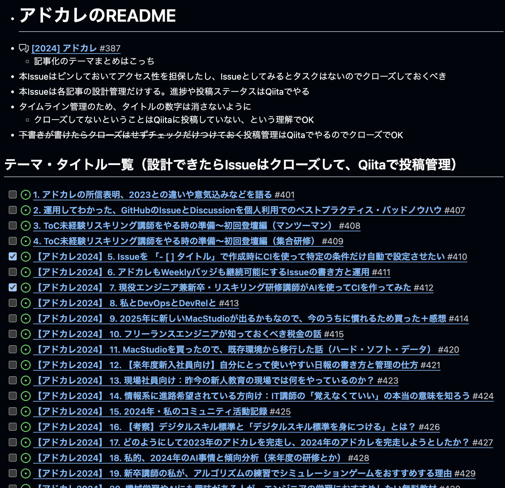

本日持って帰っていただきたいもの
- 試験勉強は独学でもできる
- 知識や技術があっても、現場での働き方が分からないと活躍が難しい
試験勉強を通じて現場を知れる機会は、独学やプログラミングスクールで探してもなかなか見つからない。
この機会をチャンスだと捉えて、最後までやり切る環境を一緒に作っていきましょう！
受講を想定している方のイメージ
- エンジニアを目指している方
- エンジニアまでは言わないが、IT技術の証明をしたい方
- AIやDXを含む、ITの勉強が必要だと感じている方
本講座ではIT知識だけでなく、マーケティング知識など包括的に学ぶ事ができます
特にITパスポート試験ではプログラミングスキルを問わないため、後述するデジタルスキル標準（経済産業省）に沿ったスキルを身につける事ができます。
ソフトスキルが重要視されるIT業界の傾向

引用元：経済産業省「デジタルスキル標準」
卒業後イメージ
- ハードスキル（リテラシー）
- Webマーケター、システムオペレーターとして現場で活躍できる知識・技術がある
- ソフトスキル（マインド・スタンス）
- システム開発者とある程度専門用語を使用した対話ができる
- IT業界で働く人の考え方や文化を受け入れられている
先輩受講生の方も、最初は全くの未経験！「パソコンとは？」というお話しから始めます。
本日持って帰っていただきたいもの
- 試験勉強は独学でもできる
- 知識や技術があっても、現場での働き方が分からないと活躍が難しい
試験勉強を通じて現場を知れる機会は、独学やプログラミングスクールで探してもなかなか見つからない。
この機会をチャンスだと捉えて、最後までやり切る環境を一緒に作っていきましょう！
Join Us, won't you?
ご清聴ありがとうございました！